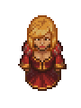

Ms. Charm
| Ms. Charm | |
|---|---|
 | |
Basic Information
| |
Location :
|
The Dead Horse |
Role :
|
Actress |
Day :
|
|

The actress Ms. Charm visits on every  and performs at The Dead Horse. Her real name is Aleidita. Once you build the Talking Skull she will also perform songs during the Ms. Charm's Song tavern event.
and performs at The Dead Horse. Her real name is Aleidita. Once you build the Talking Skull she will also perform songs during the Ms. Charm's Song tavern event.
Quests
Prove Your Worth
She does not want to speak to you. To get her to acknowledgment you need to "Be Confident" which consumes 5×
faith and you will receive 10  . Afterwards she says there might be something to your dirty and ragged charm and asks for a compliment.
. Afterwards she says there might be something to your dirty and ragged charm and asks for a compliment.
Fake Coins For Snake
You must speak to Horadric and start the Return with Royal Stamp quest for this dialog with Ms. Charm to be available.
You think Ms. Charm might be able to help you make a deal with Snake but cannot think of what kind of business someone like you would have with him. She tells you to throw these fake
coins to Snake's face and return to tell her how he reacted. When you give them to him he asks if you knew it was a joke and wants to know if you are her new lover. No matter how you answer he criticizes you for falling for her charms. You receive 10  after completing the quest.
after completing the quest.
The Hunchback of the War Camp
Ms. Charm wants you to ask Snake to find her
necklace. You will need 30  with Snake in order to proceed with the quest. He sends you to seek out the mountain fort for this. The guard there tells you that you can meet a servant a bit west of the entrance at night. This servant is Koukol, a faithful servant to the Lord Commander's family, and he tells you the
with Snake in order to proceed with the quest. He sends you to seek out the mountain fort for this. The guard there tells you that you can meet a servant a bit west of the entrance at night. This servant is Koukol, a faithful servant to the Lord Commander's family, and he tells you the
necklace is impossible for you to get. When you get back with that bad news you'll receive 10  from her.
from her.
Perfume
After you deliver the bad news, she tells you, now she really wants Miss Chains'
perfume. You've got to accompish another task in order to get the
perfume from Miss Chains' and deliver it to Ms. Charm for 10  .
.
Promote Business
Now, you should have 40  with her. Then you could ask her to promote your vegetable business (see the Merchant's quest for more details). She wants to be given a 1×
with her. Then you could ask her to promote your vegetable business (see the Merchant's quest for more details). She wants to be given a 1×
Jewelry in order to help you. After you bring her one, she starts to sell and buy
Jewelry and
perfume.
Ms. Charm's Show
Once you give her the perfume, she requests 1×
story for her show. Note that giving her one will grant you enough  to continue with the Astrologer's quest line. You'll earn 10
to continue with the Astrologer's quest line. You'll earn 10  from this.
from this.
The next step is to try and convince Alisa's father (the local farmer) to allow her to accompany her to the King's palace in town.
Ms. Charm's Father
To advance the Astrologer's quest, you have to talk to her about her father. You need 50  , just to be told that she hates him.
, just to be told that she hates him.
Fixing the Windmill
The farmer doesn't want Alisa going to town, but her brother comes forward saying that if you manage to fix his uncle's windmill, his father would surely be so happy that he would allow her to go. You need to go to the miller and he will give you the instructions to repair the windmill, but all in Latin, with one page missing. You need to go ask the Astrologer for help. You need to have at least 60  with him to restore the
with him to restore the
Paper with calculations. Together with 5×
complex iron parts and 6×
wooden plank, you'll get the mill up and running once again (you'll be able to mill your wheat here for free from now on). Speak to the farmer again and he will grant his daughter permission to go to town with Ms. Charm.
Correcting the Papers
Ms. Charm gets very happy when you bring her Alisa's paper for 10 more  , but she botches it when trying to forge her age to make her two years older. She wants now an aristocrat to sign the papers, so you need to buy
, but she botches it when trying to forge her age to make her two years older. She wants now an aristocrat to sign the papers, so you need to buy
Aristocrat papers through the Royal services (this requires 100  with the Royal services and
with the Royal services and  12 ). Show her your Aristocrat papers for 10 more
12 ). Show her your Aristocrat papers for 10 more  .
.
New Love Song
Now, she wants you to bring her the greatest love song ever. When you ask Vagner to help you with this, he wants you to prepare a fly agaric infusion for his inspiration to write one. After handing the concoction over to him, return after some days and he will be missing from the Tavern. Go search for him near the Mountain Fort Cliffs and you'll get the lyrics that you can hand over to Ms. Charm for 10  and the achievement "Ideal song".
and the achievement "Ideal song".
Save the Poet
As you report to her, that Vagner was arrested by the guards, she wants you to rescue him from the Mountain Fort. You promise to help and think that the Astrologer might be able to help you in this case.
After some tasks, you manage to accomplish for the Astrologer, Ms. Charm joins you for the rescue mission. In the end, you'll get the
necklace from her and end up with a total of 100  .
.
Trades
Once the player provides her with 1×
Jewelry through her quest-line, trading is unlocked.
Selling
Purchasing
|
||||||||||||||||||||||||||||||||||||||||||||||